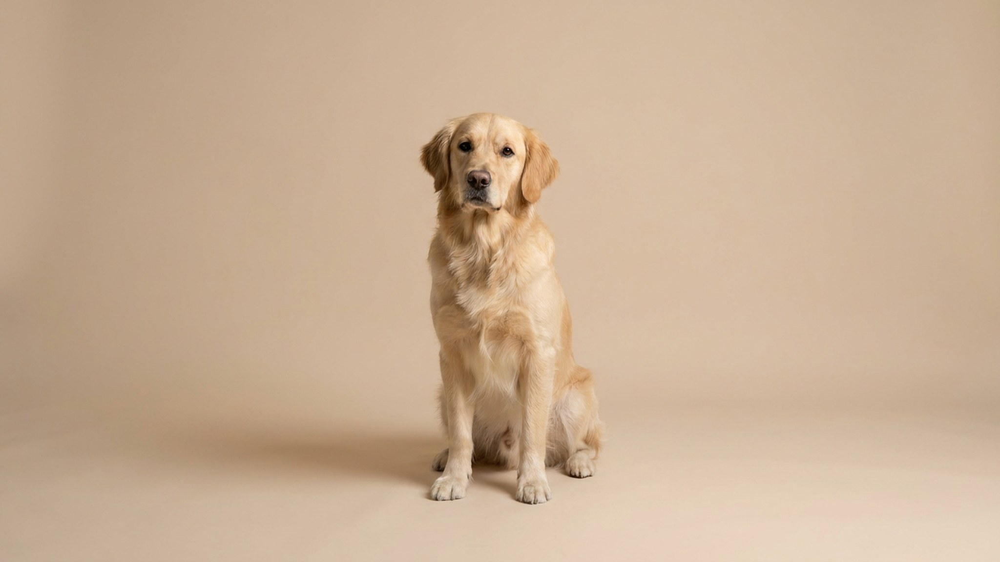

Арбуз можно, виноград нельзя: какие летние фрукты безопасны для кошки и собаки

24 июня 2026 · 3 минуты чтения · Питание · Лето · Кошки и собаки
Лето — время фруктов и ягод на каждом столе, и питомцы неизбежно тянутся к тому, что вы едите. Одни угощения вполне безобидны, другие лучше убрать подальше — разница не очевидна на взгляд. Разбираем список: что можно предложить как лакомство, а что держать вне доступа животного.
🐾 Первая помощь — всегда под рукой
AnimaLife подскажет, что делать в тревожной ситуации с питомцем ещё до визита к врачу. Откройте в один тап.
Открыть AnimaLife → Открыть в MAX →
Что можно давать: список безопасных фруктов и ягод
Всё из этого списка — только как лакомство, не более 10% суточного рациона. Маленький кусочек, без косточек, без кожуры, без сладких сиропов. Вводите по чуть-чуть и смотрите на реакцию.
- Арбуз без косточек и без корки. Хорошо увлажняет, низкокалорийный. Несколько небольших кубиков мякоти — нормальное летнее угощение для собаки. Кошке можно предложить, но интереса она, скорее всего, не проявит.
- Дыня. Мягкая, сладкая, нравится многим собакам. Убрать семена и корку, дать небольшой ломтик. Кошкам — по желанию, они реагируют непредсказуемо.
- Яблоко без семечек и сердцевины. Семечки содержат цианогенные соединения, поэтому их убираем полностью. Мякоть — источник клетчатки, несколько тонких долек в день не навредят.
- Банан. Мягкий, без косточек — один из самых простых вариантов. Калорийнее остальных, поэтому для собак с лишним весом — осторожно, маленький кусочек.
- Черника и голубика. Богаты антиоксидантами, удобный размер. Собакам можно горсть в день. Кошки редко интересуются, но иногда пробуют — вреда нет.
Главное правило для кошек: они — строгие хищники, и фрукты им физиологически не нужны. Если кошка тянется к арбузу или яблоку, это интерес к текстуре или запаху, а не потребность в витаминах. Можно дать попробовать, но не нужно предлагать специально.
Что держать подальше: фрукты и ягоды, опасные для питомца
- Виноград и изюм. Опасны для собак: даже небольшое количество может серьёзно навредить. Механизм до конца не изучен, но связи между виноградом и тяжёлыми последствиями для здоровья собак задокументированы ветеринарами хорошо. Изюм — концентрированный виноград, опасность выше. Держите вне доступа.
- Косточки и семечки. Вишня, абрикос, персик, слива, яблоко — косточки и семечки всех этих плодов содержат цианогенные соединения. Целую косточку — не давать никогда, даже «просто погрызть».
- Цитрусовые. Апельсины, мандарины, лимоны, грейпфрут — раздражают пищеварение и не нравятся большинству животных запахом. Не ядовиты, но пользы нет, зато дискомфорт возможен.
- Авокадо. Содержит персин — вещество, опасное для многих животных. Авокадо под запретом полностью: и мякоть, и косточка, и кожица.
- Недозрелые и очень кислые плоды. Кислота раздражает желудок, недозрелые плоды тяжелее переносятся. Если фрукт кислит у вас — питомцу он точно не нужен.
Как правильно угощать: три простых правила
Фрукты — дополнение, не замена корму. Несколько базовых правил, которые делают угощение безопасным:
- Убирайте косточки, семечки, кожуру и корку — независимо от того, насколько «безобидным» кажется фрукт.
- Вводите новый продукт маленькими порциями, первый раз — один-два кусочка. Смотрите, нет ли изменений в стуле или поведении.
- Не заменяйте фруктами сбалансированный корм: питательная потребность кошек и собак покрывается рационом, а не угощениями.
Когда стоит обратиться к ветеринару
Если питомец добрался до винограда, изюма или разгрыз несколько косточек от вишни или абрикоса — не ждите. Обратитесь к ветеринару: что именно предпринять и нужно ли вмешательство — решает врач, не статья в интернете.
Во всех остальных случаях, когда питомец попробовал что-то из списка «можно» в разумном количестве, — просто наблюдайте. Реакция на новый продукт у каждого животного своя.
🐾 Экономьте на лишних визитах к врачу
Сначала спросите AI-ветеринара в AnimaLife — часто этого достаточно, чтобы понять, нужен ли визит к врачу.
Спросить бесплатно → Спросить в MAX →
🐾 Понравился разбор?
Подпишитесь на канал — каждый день разбираем по одному тревожному симптому у кошек и собак: что в пределах нормы, а когда пора к врачу. Подпишитесь, чтобы не пропустить разбор, который может спасти здоровье вашего питомца.
Материал носит информационный характер и не заменяет очную консультацию ветеринара.
← Все статьи · Открыть AnimaLife в Telegram · RSS